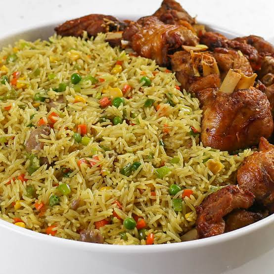

preps the mix-ins
Boil the liver or kidney with a pinch of salt, curry, and onion until fully cooked, then dice into tiny cubes. Wash, peel, and finely chop all vegetables into uniform small pieces.
Infuses flavor into every grain
Rinse the rice thoroughly under warm until clear. Bring the seasoned chicken stock to boil in a pot. Add curry powder, thyme, garlic, ginger, and bouillon cubes. Stir inthe washed rice; the stock should cover the rice slightly. Cook on medium-low heat until the rice absorbs the stock and is firm but almost fully cooked (all dente). Spread on a tray to cool.
Prevents sogginess and preserves texture
Heat 1 tablespoon of oil or butter in a wok or large skillet over medium-high heat. Add a portion of chopped onions, liver, carrots, green beans, peas, and corn. Toss and stir-fry for 2-3 minutes so the vegetables soften slightly while staying crisp.
Distributes ingredients evenly
Add a few cups of the cooked rice to the stir-fried vegetables inthe pan. Toss continuously for 3-5 minutes so the rice absorbs the oil, aromatics, and heat. Repeat the stir-fry process in batches for the remaining rice and vegetables.
Serve hot alongside fried chicken, fried plantains (dodo), or salad.